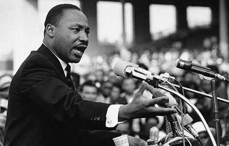

About
15 January 1929 - 4 April 1968
Martin Luther King Jr. was an American Baptist minister and activist who became the most visible spokesperson and leader in the civil rights movement from 1954 until his death in 1968. Born in Atlanta, King is best known for advancing civil rights through nonviolence and civil disobedience, tactics his Christian beliefs and the nonviolent activism of Mahatma Gandhi helped inspire.
In 1968, King was planning a national occupation of Washington, D.C., to be called the Poor People's Campaign, when he was assassinated on April 4 in Memphis, Tennessee. His death was followed by riots in many U.S. cities. Allegations that James Earl Ray, the man convicted and imprisoned of killing King, had been framed or acted in concert with government agents persisted for decades after the shooting. Ray served 29 years of a 99-year prison sentence, from 1969 to 1998, when he died.
King was posthumously awarded the Presidential Medal of Freedom and the Congressional Gold Medal. Martin Luther King Jr. Day was established as a holiday in numerous cities and states beginning in 1971; the holiday was enacted at the federal level by legislation signed by President Ronald Reagan in 1986. Hundreds of streets in the U.S. have been renamed in his honor, and a county in Washington State was also rededicated for him. The Martin Luther King Jr. Memorial on the National Mall in Washington, D.C., was dedicated in 2011.